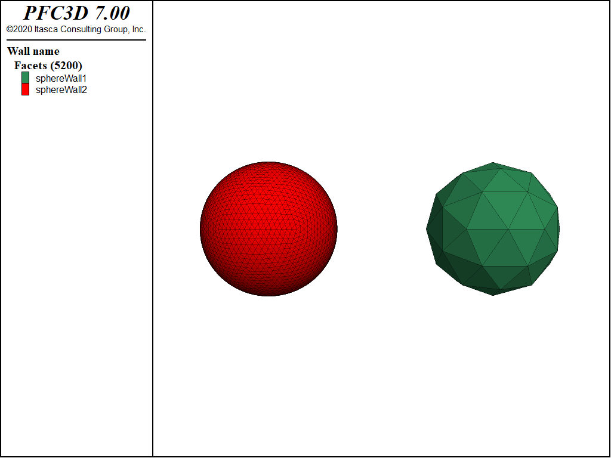
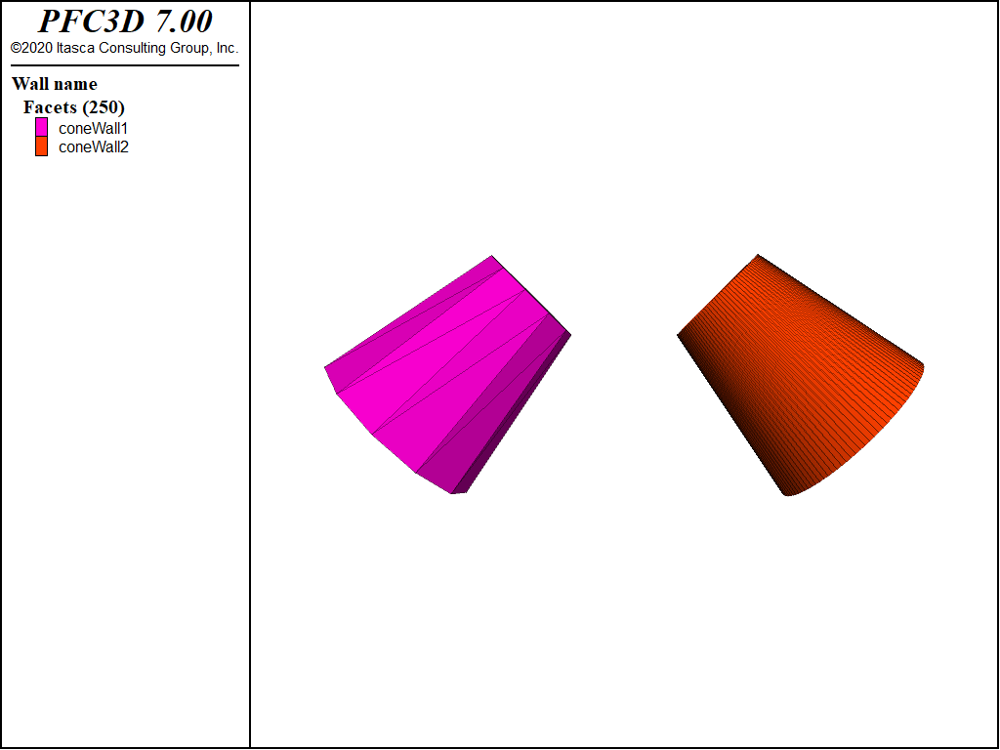

wall generate 命令
语法
- wall generate keyword ...
主要关键字：
分组（group） ID 标识（id） 名称（name） 长方体（box） 圆（circle） 圆锥（cone） 圆柱（cylinder） 圆盘（disk） 平面（plane） 点（point） 多边形（polygon） 球体（sphere）
生成指定形状的墙。墙形状包括：{二维中盒体、圆和点；三维中盒体、圆锥、圆柱、圆盘、线、平面、点、多边形和球}。
注意
- 在创建墙体之前必须先指定模型域。
- 所有墙面片都必须落在模型域内。
- id、name 和 group 关键字必须位于任何其他关键字之前。
- 在循环计算期间，只能在循环点 0 之前创建墙（即在计算时步时）。
- group s <slot slot > <facet> ...
为所创建的墙或其组成面片，在槽位 槽位（slot） 处赋予分组名称 s。 若未指定 slot 关键字，则将分组名称赋予槽位 默认（Default）。 可选的 facet 关键字指定将分组赋予面片而非墙。
- id ID 标识（id ）
墙体 ID。若未指定，则使用下一个可用的 ID。
- name s
墙名称。若未指定，则每种形状都会定义一个墙名称，并在其后附加 ID。
- box x 向最小值（fxmin ）x 向最大值（fxmax ）y 向最小值（fymin ）y 向最大值（fymax ）z 向最小值（fzmin ）z 向最大值（fzmax ）<one-wall> (*z*-components are 3D ONLY)
生成封闭盒体。若未指定 name 关键字，则 s = 盒墙体（boxWall）。默认情况下，盒体的每一侧都是独立墙。此时，墙名称由墙侧面名称（例如{二维中 top、bottom、left 或 right；三维中 top、bottom、left、right、front 或 back}）与墙 ID 连接而成。例如，若 s = 示例函数名 fred（fred），则顶墙名称为 顶部 XX 向摩擦比（fredTopXX），其中 XX 向（XX） 为墙 ID。为每面墙赋予唯一 ID，起始值为 ID 标识（id）。使用 one-wall 关键字指定盒体所有侧面属于单面墙。若仅指定 x 向最小值（fxmin） 和 x 向最大值（fxmax），则盒体为各边相等的立方体。
- circle keyword ... (2D ONLY)
生成二维封闭圆。若未指定 name 关键字，则 s = 圆墙体（circleWall）。
- position 位置矢量（vpos ）
圆心位置，默认值为原点。
- radius 搜索半径（frad ）
圆半径，默认值为 1.0。
- resolution 端边分辨率（fres ）
面片分辨率。设置面片数量使面片长度小于 端边分辨率（fres） * 搜索半径（frad）。默认情况下，端边分辨率（fres） = 0.1。
- cone keyword ... (3D ONLY)
生成三维圆锥。可生成圆锥或截锥（即若没有端盖，则如漏斗的尖端被切去的圆锥）。若未指定 name 关键字，则 s = 圆锥墙体（coneWall）。默认情况下，圆锥底面封闭，底面和侧面为独立墙。此时，墙名称由墙侧面名称（例如 top（若为截锥）、bottom 或 side）与墙 ID 连接而成。例如，若 s = 示例函数名 fred（fred），则底墙名称为 底部 XX 向摩擦比（fredBottomXX），其中 XX 向（XX） 为墙 ID。为每面墙赋予唯一 ID，起始值为 ID 标识（id）。使用 one-wall 关键字指定圆锥所有侧面属于单面墙。
- axis x 轴系数（faxisx ）y 轴系数（faxisy ）z 轴系数（faxisz ）
圆锥对称轴的方向，从底面位置指向，默认沿 z 正方向。
- base v
圆锥底面位置（即底端中心），默认值为原点。
- cap 底部标志（bbottom ）<btop >
表示端盖的包含状态。若指定一个布尔值，则该状态应用于两个端盖。若指定两个布尔值，则第一个应用于底盖，第二个应用于顶盖。默认情况下创建底盖。除非指定 顶面半径（fradtop） 且其非零，否则不创建顶盖。
- height 圆锥高度（fheight ）
圆锥高度。即从底面位置到锥尖的距离；若为截锥，则为到顶端中心的距离。默认 圆锥高度（fheight） = 1。
- one-wall
指定端盖和圆锥侧面（若均已创建）属于单面墙。
- radius 底面半径（fradbot ）<fradtop >
圆锥半径。默认情况下，底面半径（fradbot） = 1.0，顶面半径（fradtop） = 0.0，表示创建圆锥。若 顶面半径（fradtop） > 0.0，则创建截锥（即尖端被切去的圆锥）。此时，底面半径（fradbot） 为底面位置处的底部半径，顶面半径（fradtop） 为沿对称轴距底面位置 圆锥高度（fheight） 处的截锥顶部半径。
- resolution 端边分辨率（fres ）
圆锥端部边缘的分辨率。设置端部边缘数量使边缘长度小于 端边分辨率（fres） * 底面半径（fradbot）。若要生成 顶面半径（fradtop） > 0 的截锥，则端部边缘长度小于 端边分辨率（fres） * min(底面半径（fradbot）,顶面半径（fradtop）)。默认情况下，端边分辨率（fres） = 0.1。
- cylinder keyword ... (3D ONLY)
生成三维圆柱。若未指定 name 关键字，则 s = 圆柱墙体（cylinderWall）。默认情况下，圆柱封闭，每一侧均为独立墙。此时，墙名称由墙侧面名称（例如 top、bottom 或 side）与墙 ID 连接而成。例如，若 s = 示例函数名 fred（fred），则顶墙名称为 顶部 XX 向摩擦比（fredTopXX），其中 XX 向（XX） 为墙 ID。为每面墙赋予唯一 ID，起始值为 ID 标识（id）。使用 one-wall 关键字指定圆柱所有侧面属于单面墙。
- axis v
圆柱对称轴的方向，从基点出发。
- base v
圆柱底面位置（即底端中心），默认值为原点。
- cap 底部标志（bbottom ）<btop >
表示端盖的包含状态。若指定一个布尔值，则该状态应用于两个端盖。若指定两个布尔值，则第一个应用于底盖，第二个应用于顶盖。默认情况下创建两个端盖。
- height 圆锥高度（fheight ）
圆柱高度。即从底面位置到顶端中心的距离。默认 圆锥高度（fheight） = 1。
- one-wall
指定端盖和圆柱侧面（若均已创建）属于单面墙。
- radius 搜索半径（frad ）
圆柱半径，即从对称轴到侧面的距离。
- resolution 端边分辨率（fres ）
圆柱两端边缘的分辨率。端边数目设定为使边长小于 端边分辨率（fres） * 搜索半径（frad）。默认 端边分辨率（fres） = 0.1。
- disk keyword ... (3D ONLY)
生成三维圆盘。若未指定 name 关键字，则 s = 圆盘墙体（diskWall）。
- dip Fisher倾角（fdip ）
圆盘的倾角（度），范围为 [0,90]。倾角是倾向在 xy 平面上的投影与圆盘表面之间、沿 z 负方向测量的角度。默认情况下，Fisher倾角（fdip） = 0。
- dip-direction 裂隙倾向值（fddir ）
圆盘的倾向（度），从 y 轴正方向顺时针测量，范围为 [0,360]。默认情况下，裂隙倾向值（fddir） = 0。
- position v
圆盘中心位置，默认值为原点。
- radius 搜索半径（frad ）
圆盘半径，默认值为 1.0。
- resolution 端边分辨率（fres ）
圆盘边缘的分辨率。圆盘边数设定为使边长小于 端边分辨率（fres） * 搜索半径（frad）。默认 端边分辨率（fres） = 0.1。
- plane keyword ...
生成跨越整个域并在域边界处截断的平面墙。若未指定 name 关键字，则 s = 平面墙体（planeWall）。
- dip Fisher倾角（fdip ）
平面的倾角，范围{二维中为 [0,180]；三维中为 [0,90]}。倾角是{二维中从 y 轴正方向；三维中倾向在 xy 平面上的投影与圆盘表面之间沿 z 负方向}测量的角度。默认情况下，Fisher倾角（fdip） = 0。
- dip-direction 裂隙倾向值（fddir ）(3D ONLY)
平面的倾向（度），从 y 轴正方向顺时针测量，范围为 [0,360]。默认情况下，裂隙倾向值（fddir） = 0。
- position v
平面上一点的位置。
- point keyword ...
生成点墙。若未指定 name 关键字，则 s = 点墙体（pointWall）。点墙是{二维中线段；三维中等边三角形}，其尺寸应远小于（即约 1/10）模型中最小的球颗粒/子颗粒。使用 resolution 关键字指定尺寸。
- position 位置矢量（vpos ）
点墙的位置，默认值为原点。
- resolution 端边分辨率（fres ）
点墙的分辨率。它对应于{二维中面片长度；三维中等边三角形边长}。默认情况下，端边分辨率（fres） 为模型域各边最小长度的 1/100。
- polygon 位置矢量（vpos ）... <make-planar> <triangulate> (3D ONLY)
生成三维平面多边形墙。 若未指定 name 关键字，则 s = 多边形墙体（polygonWall）。 有两种操作模式：默认模式保证适用于凸多边形；三角剖分模式通过可选的 triangulate 关键字指定，适用于凸多边形和凹多边形。 两种模式下，makeplanar 关键字用于将顶点吸附到以顶点平均位置（称为中心）为点的平面上。平面法向由两个矢量的叉积定义，即中心到顶点 1 的矢量差与中心到顶点 2 的矢量差。
默认模式下，墙的顶点可按任意顺序输入，命令保证适用于定义凸多边形的顶点集。 算法按绕中心的顺时针顺序排列各点。 第一个面片由 [1,2,num] 顶点创建，其中 num 为顶点总数。 下一个面片由 [2,num,3] 顶点创建，再下一个由 [num,3,num-1] 顶点创建，依此类推。
三角剖分模式下，顶点必须沿多边形周边按顺序输入。 使用 sweep line 算法对多边形进行三角剖分。
- sphere keyword ... (3D ONLY)
在三维中生成封闭球形墙。球体通过细化二十面体（即由 20 个相同的等边三角形组成的球面）生成，使边长小于 resolution 关键字定义的长度。
- position 位置矢量（vpos ）
球体形心位置，默认值为原点。
- radius 搜索半径（frad ）
球体半径，默认值为 1.0。
- resolution 端边分辨率（fres ）
面片边缘的分辨率。设置面片数量使边缘长度小于 端边分辨率（fres） * 搜索半径（frad）。默认情况下，端边分辨率（fres） = 0.1。
用法示例
wall generate 可用于生成三维中标准形状（盒体、圆锥、圆柱等）和二维中标准形状（圆、点）的墙。
以下是创建球形墙的示例。
model new
model domain extent -10 10
wall generate ...
group 'spheres' ...
sphere position 5.0 0.0 -2.0 ...
radius 3.0 ...
resolution 1
wall generate ...
group 'spheres' ...
sphere position -5.0 0.0 -2.0 ...
radius 3.0 ...
resolution 0.1
创建两个尺寸相同的球形墙。
分辨率（resolution） 关键字决定球面的平滑程度，如 图 1（Fig. 1） 所示。请注意，使用较大的 resolution 值会显著增加计算成本。


图 1：使用 wall generate 命令生成的球形墙。分辨率（resolution） 关键字决定球面的平滑程度。
以下是生成截锥形墙的另一个示例。
model new
model domain extent -20 20
wall generate ...
group 'cones' ...
cone ...
axis 1 0 1 ...
base -12.0 0.0 0 ...
cap true true ...
height 10.0 ...
one-wall ...
radius 5.0 3.0 ...
resolution 1
wall generate ...
group 'cones' ...
cone ...
axis -1 0 1 ...
base 12.0 0.0 0 ...
cap false false ...
height 10.0 ...
one-wall ...
radius 5.0 3.0 ...
resolution 0.1
与圆柱墙的情况一样，用户可选择在创建墙时是否包含圆锥/圆柱端盖。这可通过 盖帽（cap） 关键字完成（见 图 2（Fig. 2））。one-wall 关键字决定端盖和侧面面片是否应视为属于单面墙。


图 2：使用 wall generate 命令生成的圆锥形墙。分辨率（resolution） 关键字决定圆锥面的平滑程度。盖帽（cap） 关键字允许生成带端盖或不带端盖的墙。
| 这些内容对您有帮助吗？… | FLAC3D © 2019, Itasca | 原文更新于 2020 年 10 月 8 日 |